P6 设计文档
5 级流水线 CPU 设计文档 +
支持指令
R, add, sub, And, Or, Xor, slt, sltu
addi, andi, xori, ori, lui
lb, lh, lw, sb, sh, sw, lbu, lhu
mult, multu, div, divu, mfhi, mflo, mthi, mtlo
beq, bne, j, jal, jr, bltzal
sll
流程模块设计
CU 模块设计
- 相较 P4，省去 RegWrite 信号，直接译出当前指令需要写入的地址，如不需写入，默认写至 0，在写入 GRF 时直接略去
- 直接译出当前指令 rs, rt, rd, shamt, imm16, imm26 以及所有控制信号供每个阶段选取使用，还需译出 Tuse_rs/rt 以及 E_Tnew 与 M_Tnew，各级输出对应信号至 Conflict 模块
- 将指令分类，分为：cal_r,cal_i,md,mt,mf,load,save,branch,branch_ucl,branch_cl,shift,jreg,jadd,jlink（ori 被归为 cal_i）
1 | assign cal_r=(add||sub||And||Or||Xor||slt||sltu); |
- 控制信号新增：MDU, MDUStart, MDUSelect, MFSelect, ByteSelect, DESelect
- 控制信号调整：GRF_WA, GRF_WDSrc, ALUSelect, EXTSelect（cal_i 各个指令行为不同，注意对照指令集）,BranchSelect
| Port name | Direction | Type | Description |
|---|---|---|---|
| Ins | input | [31:0] | 当级指令 |
| branchTrue | input | 分支控制信号 | |
| 控制信号 | |||
| GRF_WA | output | [4:0] | 写入的地址 |
| GRF_WDSrc | output | [2:0] | 写入数据选择 |
| EXTSelect | output | EXT 位拓展类型选择 | |
| ALUSrc | output | ALU_B 的数据源选择 | |
| ALUSelect | output | [3:0] | ALU 运算类型选择 |
| MDU | output | 乘除运算 + 读写 HI LO 信号（需要阻塞） | |
| MDUStart | output | 乘除运算开始信号 | |
| MDUSelect | output | [2:0] | 乘除运算 + 写 HI LO 功能选择 |
| MFSelect | output | [1:0] | 读 HI LO 功能选择 |
| MemWrite | output | 内存写入控制 | |
| BranchSelect | output | [3:0] | branch 判断类型选择 |
| NPCSelect | output | [2:0] | NPC 类型选择 |
| ByteSelect | output | [1:0] | 访存数据类型选择 |
| DESelect | output | [2:0] | 读取内存后结果拓展类型 |
| 指令译码 | |||
| opcode | output | [5:0] | |
| funct | output | [5:0] | |
| rs | output | [4:0] | |
| rt | output | [4:0] | |
| rd | output | [4:0] | |
| shamt | output | [4:0] | |
| imm16 | output | [15:0] | |
| imm26 | output | [25:0] | |
| T 计算 | |||
| Tuse_rs | output | [1:0] | |
| Tuse_rt | output | [1:0] | |
| E_Tnew | output | [1:0] | |
| M_Tnew | output | [1:0] |
T 计算表格
- 注意新增的乘除指令的 AT
| Ins | Tuse_rs | Tuse_rt | E_Tnew | M_Tnew |
|---|---|---|---|---|
| cal_r | 1 | 1 | 1 | |
| cal_i | 1 | 1 | ||
| md | 1 | 1 | ||
| mt | 1 | |||
| mf | 1 | |||
| load | 2 | 2 | 1 | |
| save | 1 | 2 | ||
| branch | 0 | 0 | ||
| jreg | 0 |
Conflit 模块设计：AT 控制阻塞，直接转发
阻塞
- D 级判断将要使用的寄存器数据是否能得到转发更新，即后续写入相同寄存器的 Tnew 是否有大于 Tuse 的，如果有则需要阻塞，以在后续能得到转发更新。特判 0 号寄存器不需要阻塞，能够直接获得数据 0
- 需要得到 D 级指令 rs, rt 的 Tuse，以及后续 E, M 级指令的 Tnew，在各级 CU 中计算，发送至冲突单元（W 级 Tnew 全是 0 不需要考虑，都可以内部转发解决）
- 阻塞时需要暂停更新 PC 以及 F 级读出的指令，并且清空 D 级当前指令的译码输出，以替换为 nop 空泡
- 新增乘除 Stall，在乘除运算即将开始或正在进行时如遇到乘除指令需要 Stall
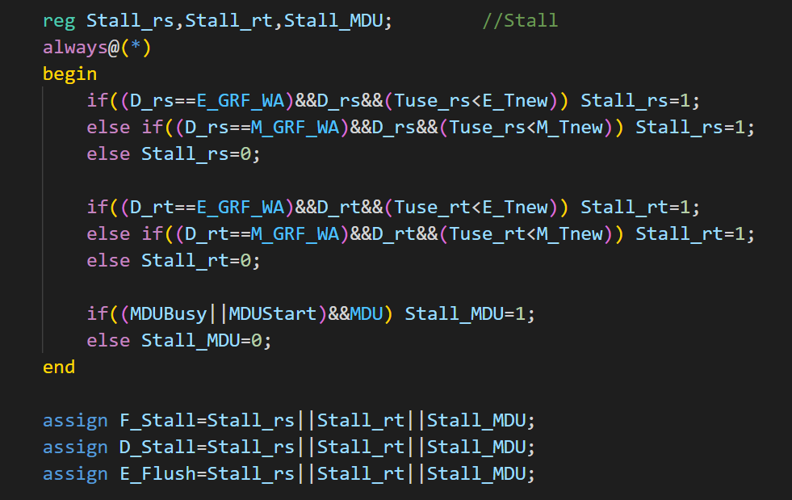
转发
阻塞后，所有指令在需要读寄存器数据的时候都能够获得后续计算完毕的数据，每级转发出已算出的数据，发送给之前各级即可。
需要读寄存器：D 级 GRF，Branch 计算需要 rs, rt 数据；E 级 ALU 需要 rs,rt 数据；M 级 DM 写入数据口需要 rt 数据
需要写寄存器：E 级可转发出 D 级算的 PC+8；M 级可转发出 D 级算的 PC+8 和 E 级算的的 ALU_Y；W 级可转发出 D 级算的 PC+8，E 级算的的 ALU_Y 和 M 级读出的 DM 数据。 根据当前指令 CU 译码得到的 GRF_WDSrc 进行选择 。此外还有 W 级寄存器写入，可直接内部转发至 D 级读出
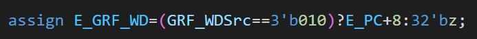
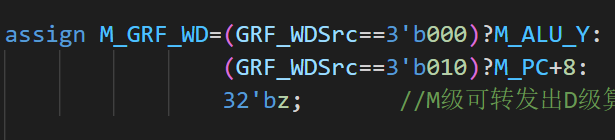
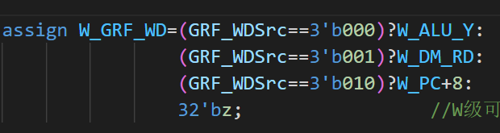
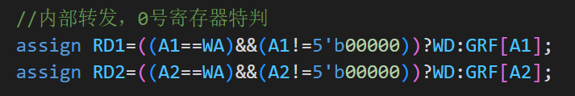
- 在主模块中，获取各级需要读的寄存器编号（D_rs,D_rt,E_rs,E_rt,M_rt），寄存器原读数（D_rs_data,D_rt_data,E_rs_data,E_rt_data,M_rt_data），写入的寄存器编号（E_GRF_WA,M_GRF_WA,W_GRF_WA）和数据（E_GRF_WD,M_GRF_WD,W_GRF_WD）
- 比较读的编号和写的编号是否有相等的，如有相等的则代表有数据已经更新需要转发，转发优先级为更新次序，最后一次更新优先转发，即优先转发距离需要数据的阶段近的数据，特判如果需要读 0 号寄存器的数据，直接转发 0
- 转发的数据（D_rs_fw,D_rt_fw,E_rs_fw,E_rt_fw,M_rt_fw）发送至各级需要的部分运算，并传递给下一级
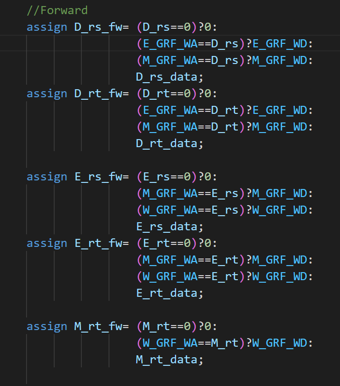
五级模块设计
每个阶段之间以寄存器隔开，寄存器设计在每个模块输出处，使用 reg 类型
每个阶段之间需要流水传递 Ins，PC，传给各级 CU 以译码出当前阶段的 rs，rt 以及需要写入的地址和写入数据的选择
部分阶段前后间需要传递需要使用的 NPC, EXTout, ALU_Y, DM_RD
P6 更新乘除槽与储存器外置以及按字节访存
- 删去 F_IFU 与 M_DM，添加 M_DE 与 E_MDU
- 乘除槽有两个寄存器，其中数据需要在 EMW 级流水，以便进行转发，并且需要添加转发信号控制
- 外置储存器需要修改数据通路，前寄存器发送写入数据，后寄存器接收读出数据
1. Fetch
- 包含 FDReg
- Fetch
| Port name | Direction | Type | Description |
|---|---|---|---|
| clk | input | ||
| reset | input | ||
| F_Flush | input | 清空延迟槽信号 | |
| F_Stall | input | 阻塞更新 PC | |
| NPC | input | [31:0] | D 级 NPC 计算出的 NPC 传入 |
| F_PC | output | reg [31:0] | <=NPC，传出至外部指令储存器 |
| F_Ins | input | [31:0] | 需要从外部指令储存器读入 Ins |
| FD 寄存器 | |||
| D_Stall | input | 阻塞更新 FD 间寄存器 | |
| D_Flush | input | 清除延迟槽信号 | |
| D_PC | output | reg [31:0] | <=F_PC |
| D_Ins | output | reg [31:0] | <=F_Ins |
- F 级与指令储存的数据交换
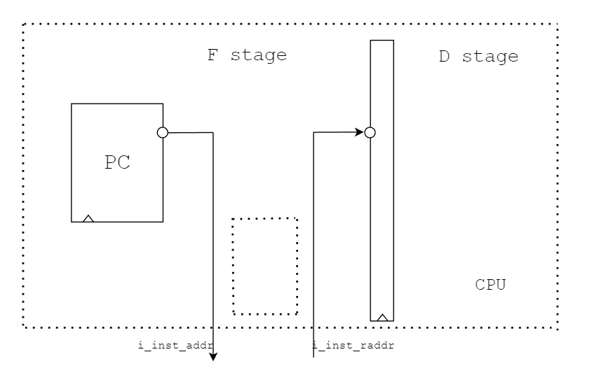
2. Decode
- 包括 D_CU, EXT, NPC (Branch), DEReg
| Port name | Direction | Type | Description |
|---|---|---|---|
| clk | input | ||
| reset | input | ||
| D_PC | input | [31:0] | PC 流水 |
| D_Ins | input | [31:0] | 指令流水 |
| Conflict/Forward | |||
| Tuse_rs | output | [1:0] | AT 算阻塞 |
| Tuse_rt | output | [1:0] | |
| D_rs | output | [4:0] | D 级指令读寄存器的编号 |
| D_rt | output | [4:0] | |
| D_rs_data | output | [31:0] | D 级指令读寄存器原数据 |
| D_rt_data | output | [31:0] | |
| D_rs_fw | input | [31:0] | D 级转发后寄存器数据 |
| D_rt_fw | input | [31:0] | |
| EXT | |||
| imm16 | [15:0] | EXT 输入 | |
| EXTSelect | EXT 功能选择 | ||
| D_EXT_out | [31:0] | EXT 输出 | |
| NPC | |||
| NPCSelect | [2:0] | 下一指令地址选择 | |
| D_branchTrue | 是否分支信号，进入流水 | ||
| F_PC | input | [31:0] | 算 NPC 用 |
| NPC | output | [31:0] | 传给 F 级 IFU |
| DEReg | |||
| E_Flush | input | 阻塞清空 DE 寄存器 | |
| E_PC | output | reg [31:0] | <=D_PC |
| E_Ins | output | reg [31:0] | <=D_Ins |
| E_rs_data | output | reg [31:0] | <=D_rs_fw |
| E_rt_data | output | reg [31:0] | <=D_rt_fw |
| E_EXT_out | output | reg [31:0] | <=D_EXT_out |
| E_branchTrue | output | reg [31:0] | <=D_branchTrue |
3. Execute
- 包括 E_CU, E_ALU, E_MDU, EMReg
- 需在此处多向 Conflict 传递 MDU 指令以及乘除运行信息，并向流水中传递 HI, LO 以便 mf 指令 W 级读取
| Port name | Direction | Type | Description |
|---|---|---|---|
| clk | input | ||
| reset | input | ||
| E_PC | input | [31:0] | PC 流水 |
| E_Ins | input | [31:0] | 指令流水 |
| Conflict/Forward | |||
| E_branchTrue | input | 是否分支信号 | |
| E_Tnew | output | [1:0] | AT 算阻塞 |
| E_rs | output | [4:0] | E 级指令读寄存器的编号 |
| E_rt | output | [4:0] | |
| E_rs_data | output | [31:0] | E 级指令读寄存器原数据 |
| E_rt_data | output | [31:0] | |
| E_GRF_WA | output | [4:0] | E 级指令写寄存器的编号 |
| E_rs_fw | input | [31:0] | E 级接收转发后寄存器数据 |
| E_rt_fw | input | [31:0] | |
| GRF_WDSrc | [2:0] | E 级指令写寄存器的数据选择 | |
| E_GRF_WD | output | [31:0] | E 级指令写寄存器的数据 |
| ALU | |||
| E_EXT_out | input | [31:0] | |
| ALUSrc | ALU_B 数据源选择 | ||
| ALUSelect | [3:0] | ALU 功能选择 | |
| E_ALU_A | [31:0] | =E_rs_fw：ALU_A 口数据 | |
| E_ALU_B | [31:0] | =E_rt_fw/E_EXT_out：ALU_B 口数据 | |
| MDU | |||
| MDU | output | MDU 指令 | |
| MDUSelect | [2:0] | CU 给 MDU 的功能选择 | |
| MDUStart | output | MDU 运算开始 | |
| MDUBusy | output | MDU 运算进行（发给 Conflict 判断阻塞 ) | |
| E_HI | [31:0] | 待转发的 E 级 MDU 的 HI 结果 | |
| E_LO | [31:0] | 待转发的 E 级 MDU 的 LO 结果 | |
| EMReg | |||
| M_PC | output | reg [31:0] | <=E_PC |
| M_Ins | output | reg [31:0] | <=E_Ins |
| M_ALU_Y | output | reg [31:0] | <=E_ALU_Y |
| M_rt_data | output | reg [31:0] | <=E_rt_fw |
| M_branchTrue | output | reg | <=E_branchTrue |
| M_HI | output | reg [31:0] | <=E_HI |
| M_LO | output | reg [31:0] | <=E_LO |
- #####E_ALU
| Port name | Direction | Type | Description |
|---|---|---|---|
| op | input | [3:0] | |
| A | input | [31:0] | |
| B | input | [31:0] | |
| Y | output | [31:0] |
#####E_MDU
- 当指令为 mthi, mtlo，将寄存器数据写入 HI, LO 时，始终上升沿直接给 HI, LO 赋为 A
- 当为其余四条运算指令时，设置临时计数变量 cnt，初始为 0，接受到 Start 信号时，开始设置 Busy 为 1；根据 MDU 功能选择编码，分别直接计算出 HI, LO 对应结果赋值，因为其他乘除操作已被阻塞，不会提前读取或写入；设置 cnt 为 5 或 10，每周期 -1，cnt==1 代表运算结束，持续保持 Busy 为 5/10 周期后将 cnt, Busy 归零。
| Port name | Direction | Type | Description |
|---|---|---|---|
| clk | input | ||
| reset | input | ||
| Start | input | CU 传入开始乘除运算信号 | |
| MDUSelect | input | [2:0] | CU 传入乘除功能选择 |
| A | input | [31:0] | |
| B | input | [31:0] | |
| Busy | output | reg | 正在运算信号 |
| HI | output | reg [31:0] | |
| LO | output | reg [31:0] |
4. Memory
- 包括 M_CU, M_DE
- 因储存器外置，删除 DM，加入对字节存取数据的操作，包括通过控制四位 ByteEn 各位
| Port name | Direction | Type | Description |
|---|---|---|---|
| clk | input | ||
| reset | input | ||
| M_PC | input | [31:0] | |
| M_Ins | input | [31:0] | |
| Conflict/Forward | |||
| M_branchTrue | input | ||
| M_Tnew | output | [1:0] | AT 算阻塞 |
| M_GRF_WA | output | [4:0] | M 级指令写寄存器编号 |
| M_GRF_WD | output | [31:0] | M 级指令写寄存器数据 |
| M_rt | output | [4:0] | M 级指令读寄存器编号 |
| GRF_WDSrc | [2:0] | M 级指令写寄存器数据选择 | |
| MFSelect | [1:0] | 读 HI LO 功能选择 | |
| M_HI | input | [31:0] | 待转发的 E 级 MDU 的 HI 结果 |
| M_LO | input | [31:0] | 待转发的 E 级 MDU 的 LO 结果 |
| M_ALU_Y | input | [31:0] | 待转发的 E 级 ALU 计算结果 |
| M_BE（ByteEnable） | |||
| lowAddr | [1:0] | =M_ALU_Y[1:0]，DM 写入地址地两位 | |
| M_rt_fw | input | [31:0] | M 级接收转发后将写入 DM 的数据 |
| ByteSelect | [1:0] | CU 访存数据类型选择 | |
| MemWrite | DM 写使能 | ||
| ByteEn | output | reg [3:0] | 控制每一位是否读写的信号输出 |
| M_DM_WD | output | reg [31:0] | |
| M_DE（DataExtend） | |||
| DESelect | [2:0] | 字节数据拓展类型 | |
| M_DM_RDin | input | [31:0] | |
| M_DM_RDout | [31:0] | ||
| MWReg | |||
| W_PC | output | reg [31:0] | <=M_PC |
| W_Ins | output | reg [31:0] | <=M_Ins |
| W_ALU_Y | output | reg [31:0] | <=M_ALU_Y |
| W_DM_RD | output | reg [31:0] | <=M_DM_RDout |
| W_branchTrue | output | reg | <=M_branchTrue |
| W_HI | output | reg [31:0] | <=M_HI |
| W_LO | output | reg [31:0] | <=M_LO |
M_BE（计算字节访存使能，调整四字节写入数据）
合并在 Memory 中，在写入的条件下，根据写入数据类型和写入地址低两位产生四个字节的每一位控制信号，即四位 ByteEn
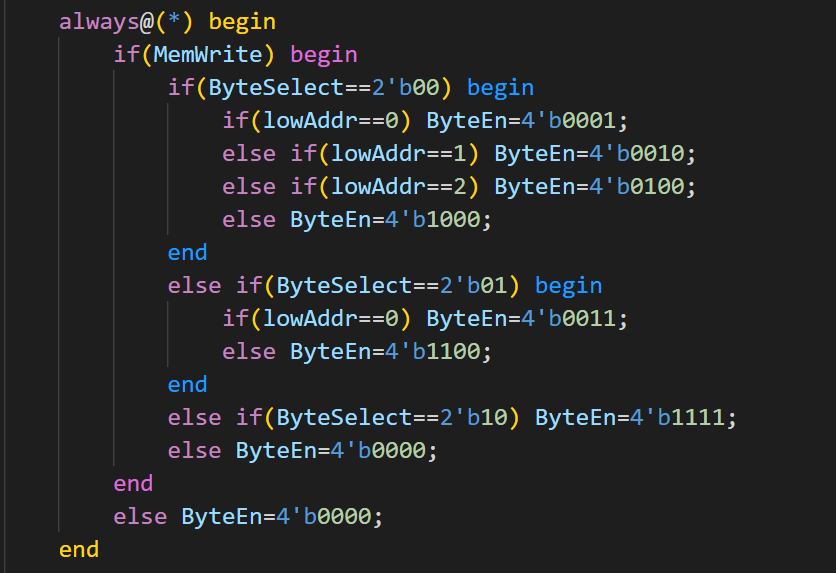
后续再根据 ByteEn 调整将写入内存的数据，需将待写入的字节移动到对应为 En1 的位置
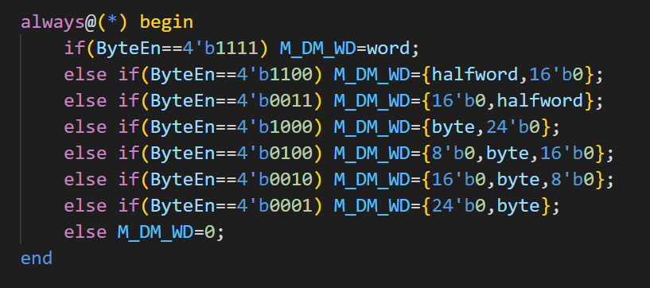
M_DE（调整内存读出数据，截取需要的字节后拓展）
注意 DESelect 种类编码，注意需要将读出字节移动至低位，高位进行拓展补齐
Port name Direction Type Description lowAddr input [1:0] DESelect input [2:0] in input [31:0] out output [31:0]
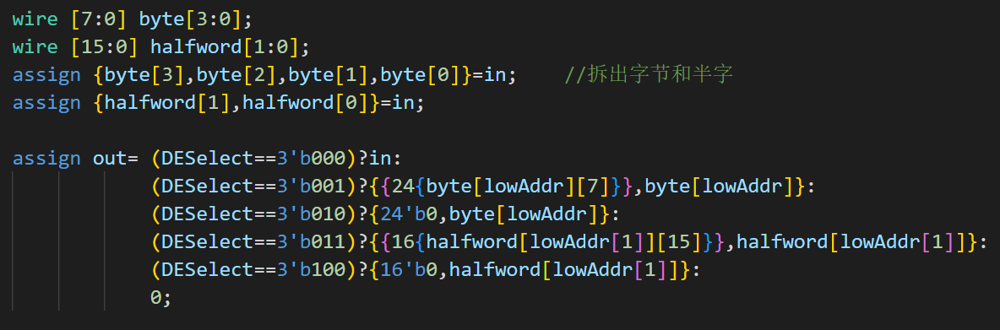
- M 级与内存数据交换
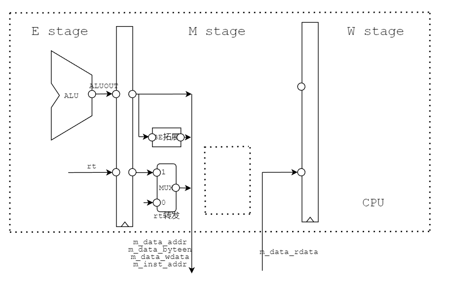
5. Writeback
- 包括 W_CU
| Port name | Direction | Type | Description |
|---|---|---|---|
| clk | input | ||
| reset | input | ||
| W_Ins | input | [31:0] | |
| W_PC | input | [31:0] | |
| Conflict/Forward | |||
| W_branchTrue | input | ||
| W_GRF_WA | output | [4:0] | W 级指令写寄存器编号 |
| GRF_WDSrc | [2:0] | W 级指令写寄存器数据选择 | |
| MFSelect | [1:0] | 读 HI LO 功能选择 | |
| W_ALU_Y | input | [31:0] | 待转发的 E 级 ALU 计算结果 |
| W_DM_RD | input | [31:0] | 待转发的 M 级 DM 读出数据 |
| W_HI | input | [31:0] | 待转发的 E 级 MDU 的 HI 结果 |
| W_LO | input | [31:0] | 待转发的 E 级 MDU 的 LO 结果 |
| W_GRF_WD | output | [31:0] | W 级指令写寄存器数据 |
测试 (同 P5，P6 单独构造测试数据)
1 | .text |
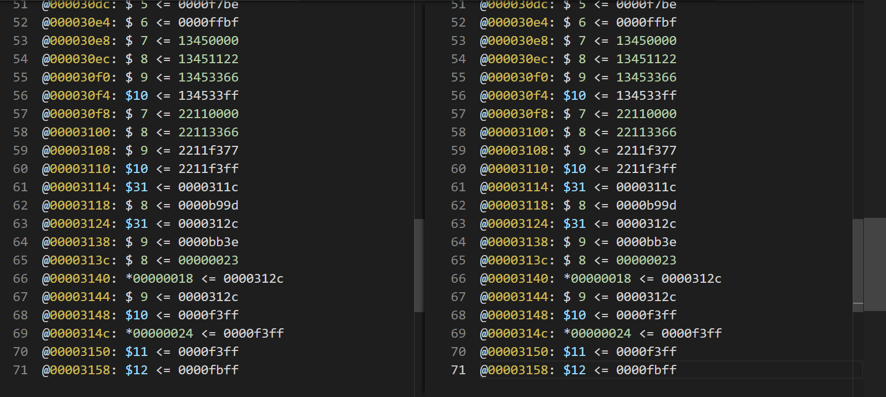
- 对 0 号寄存器读写测试
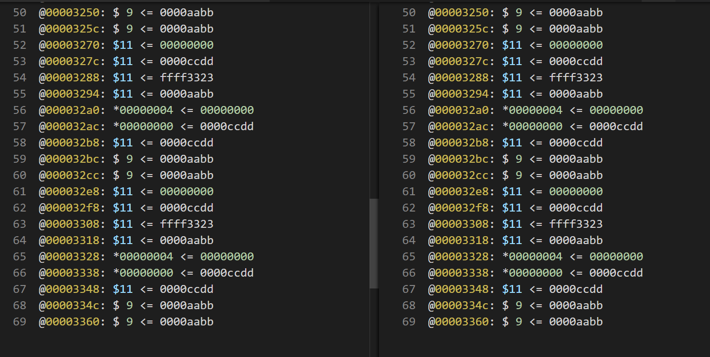
注意事项
- 乘除指令的 Tuse，Tnew：包括 md 指令 Tuse_rs=Tuse_rt=1; mf 指令 E_Tnew=1
- 按字节访存的字节位置调整
- 指令功能选择编码
- cal_i 指令拓展类型，有有符号，有无符号
思考题
- 因为硬件运算中乘除法消耗时间很长，需要持续多个周期，放入 ALU 后会大幅降低频率。独立的 HI，LO 寄存器方便乘除槽与外部交换数据，并且单独预留给乘除指令，避免其他普通存取导致过多阻塞。
- 使用移位操作，采用逐位并行的迭代阵列结构，将每个操作数的 N 位都并行地提交给乘法器
1 | module multi_4bits_pipelining(mul_a, mul_b, clk, rst_n, mul_out); |
在 Start 到来的周期开始置 1，通过 cnt 计数周期，计数完毕前始终保持 1，完毕后归 0
统一所有三种数据类型的访存操作，避免使用过多控制信号。直接用对应字节是否 Enable 决定是否访存，更加直接清晰。
在 lb,sb 的情况下是一个字节；lh,sh 两个字节；lw,sw 四个字节。而按字访存的情况下则始终操作四个字节所以在执行 lh,sh,lb,sb 指令时按字节读和按字节写的效率会高于按字读和按字写。
将指令分类，译码时不用在每个控制信号与 AT 计算中添加新指令，便于管理与增量开发，但需要注意某些功能是否相同，具有统一行为，如 EXT。采用分布式统一译码，将各级所需控制信号直接独立传递。
MDU 的指令之间的冲突：在 D 级检测是否该指令要使用 MDU，暂停的条件是要使用 MDU 并且 MDU 处于 start 或 busy 的状态。
1
2
3
4
5
6
7
8
9ori $t1,5
mthi $t1
mtlo $t1
div $t1,$t2
mfhi $t4
mflo $t5
div $t2,$t3
mfhi $t4
mflo $t5MDU 与其他指令的冲突：包括 md 指令 Tuse_rs=Tuse_rt=1; mf 指令 E_Tnew=1
1
2
3
4
5
6
7
8here:
ori $t1,5
sw $t1,0($0)
lw $t2,0($0)
div $t1,$t2
mfhi $t3
mflo $t4
beq $t4,$5,here除 MDU 之外其他指令之间的冲突：指令分类后用指令类型设定对应的 Tuse 和 Tnew，与 P5 相同
1
2
3
4
5
6
7ori $t0,5
lui $t1,1
sw $t1,0($0)
lbu $t2,0($0)
or $t3,$t1,$t2
lh $t5,0($0)
slt $t6,$t4,$t5
测试单条指令
枚举各指令排列和之间距离
枚举各个寄存器访存，以及 HI, LO
枚举各种数据类型和数据的读写